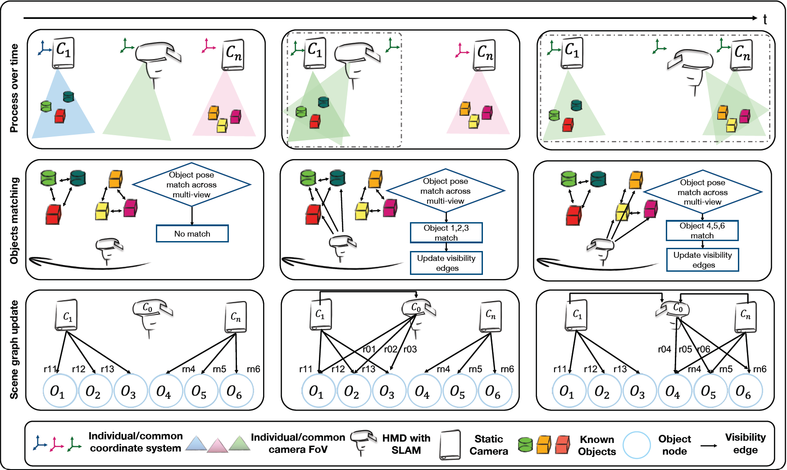

<section>
    <div class="container">

        <hr>
        <h4 id="2026">2026</h4>
        <hr>

        <div class="row">
            <div class="col-lg-4 col-md-4 col-sm-12 text-center">
                
            </div>
            <div class="col-lg-8 col-md-8 col-sm-12" style="padding:2%">
                <span class="papertitle">MultiCam: On-the-fly Multi-Camera Pose Estimation Using Spatiotemporal Overlaps of Known Objects</span>
                <br>
                <span style="font-weight: lighter">S. Li, H. Schieber, K. Waldow, </span>
                J. Kreimeier <span style="font-weight: lighter">, Benjamin Busam and D. Roth </span>
                <br>
                <em>IEEE Transactions on Visualization and Computer Graphics, </em>2026
                <br>
                <p class="d-inline-flex gap-1">
                    <a class="btn btn-dark" data-bs-toggle="collapse" href="#MultiCAM" role="button"
                       aria-expanded="false" aria-controls="MultiCAM">
                        Abstract
                    </a>
                    <a class="btn btn-dark"
                       href="https://doi.org/10.1109/TVCG.2026.3679095">IEEE</a>
                </p>
                <div class="collapse" id="MultiCAM">
                    <div class="card card-body">
                        <p>
                            Multi-camera dynamic Augmented Reality (AR) applications require a camera pose estimation to leverage individual information from each camera in one common system. This can be achieved by combining contextual information, such as markers or objects, across multiple views. While commonly cameras are calibrated in an initial step or updated through the constant use of markers, another option is to leverage information already present in the scene, like known objects. Another downside of marker-based tracking is that markers have to be tracked inside the field-of-view (FoV) of the cameras. To overcome these limitations, we propose a constant dynamic camera pose estimation leveraging spatiotemporal FoV overlaps of known objects on the fly. To achieve that, we enhance the state-of-the-art object pose estimator to update our spatiotemporal scene graph, enabling a relation even among non-overlapping FoV cameras. To evaluate our approach, we introduce a multi-camera, multi-object pose estimation dataset with temporal FoV overlap, including static and dynamic cameras. Furthermore, in FoV overlapping scenarios, we outperform the state-of-the-art on the widely used YCB-V and T-LESS dataset in camera pose accuracy. Our performance on both previous and our proposed datasets validates the effectiveness of our marker-less approach for AR applications. The code and dataset are available on https://github.com/roth-hex-lab/IEEE-VR-2026-MultiCam.
                        </p>
                    </div>
                </div>
            </div>
        </div>


    </div>
</section>